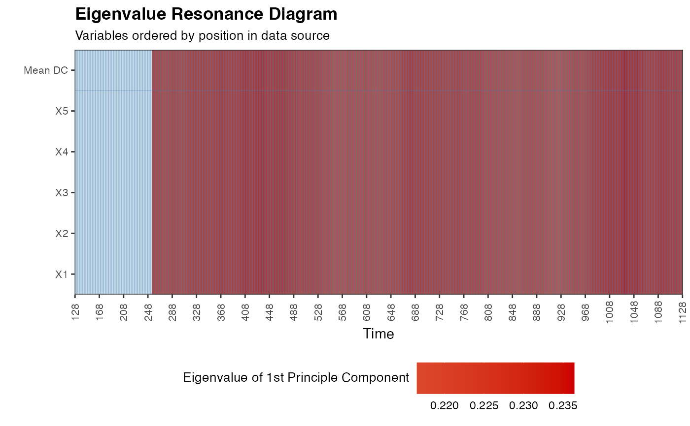

Calculate the eigenvalue of the first PCA component in a right-aligned sliding window on (multivariate) time series data.
eig_win(
df,
win = NROW(df),
doPlot = FALSE,
useVarNames = TRUE,
colOrder = TRUE,
useTimeVector = NA,
timeStamp = "31-01-1999"
)A data frame containing multivariate time series data from 1 person. Rows should indicate time, columns should indicate the time series variables. All time series in df should be on the same scale, an error will be thrown if the range of the time series indf is not [scale_min,scale_max].
Size of window in which to calculate Dynamic Complexity. If win < NROW(df) the window will move along the time series with a stepsize of 1 (default = NROW(df))
If TRUE shows a Complexity Resonance Diagram of the Dynamic Complexity and returns an invisible ggplot2::ggplot() object. (default = FALSE)
Use the column names of df as variable names in the Complexity Resonance Diagram (default = TRUE)
If TRUE, the order of the columns in df determines the of variables on the y-axis. Use FALSE for alphabetic/numeric order. Use NA to sort by by mean value of Dynamic Complexity (default = TRUE)
Parameter used for plotting. A vector of length NROW(df), containing date/time information (default = NA)
If useTimeVector is not NA, a character string that can be passed to lubridate::stamp() to format the the dates/times passed in useTimeVector (default = "01-01-1999")
Data frame with the eigenvalues in requested window size.
For different step-sizes or window alignments see ts_windower().
data(ColouredNoise)
eig_win(df = elascer(ColouredNoise[,c(1,11,21,31,41)],groupwise = TRUE), win = 128, doPlot = TRUE)
#> Warning: Removed 906 rows containing missing values or values outside the scale range
#> (`geom_raster()`).
#> Warning: Removed 22 rows containing missing values or values outside the scale range
#> (`geom_vline()`).
